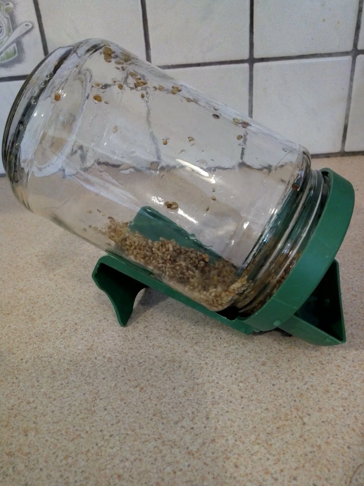

Recette
Graines germées, 2ème étape : égouttage et rinçage
En attendant les crudités de printemps, pour faire le plein de vitamine C et de minéraux - sans gluten -

Deuxième étape: égouttage et rinçage
Après les 4 heures ou la nuit de trempage, égoutter les graines à travers la passoire du germoir ou à travers une passoire ordinaire Il faut que les trous soient assez fins, car les graines d'alfalfa (famille des légumineuses), même réhydratées restent très petites.
Rincer à l'eau du robinet à température ambiante, 2 ou 3 fois et renversez votre germoir pour le laisser en position inclinée.
Les graines doivent rester humides et à l'air. Si elles sèchent, elles ne peuvent plus germer. Si elles restent dans l'eau trop longtemps, elles s'asphyxient et ne peuvent pas germer non plus.
Le plus gros risque aec les graines germées c'est l'apparition de moisissures. Pour éviter cela, rincer généreusement 2 fois par jour, matin et soir au réveil et avant d'aller vous coucher. S'il fait très chaud dans la maison, ajoutez un rinçage en milieu de journée.
Maintenant, tout en pensant aux rinçages quotidiens, il faut attendre 5 à 6 jours pour obtenir de jeunes pousses bonnes à consommer.
La suite donc dans quelques jours....
Après les 4 heures ou la nuit de trempage, égoutter les graines à travers la passoire du germoir ou à travers une passoire ordinaire Il faut que les trous soient assez fins, car les graines d'alfalfa (famille des légumineuses), même réhydratées restent très petites.
Rincer à l'eau du robinet à température ambiante, 2 ou 3 fois et renversez votre germoir pour le laisser en position inclinée.
Les graines doivent rester humides et à l'air. Si elles sèchent, elles ne peuvent plus germer. Si elles restent dans l'eau trop longtemps, elles s'asphyxient et ne peuvent pas germer non plus.
Le plus gros risque aec les graines germées c'est l'apparition de moisissures. Pour éviter cela, rincer généreusement 2 fois par jour, matin et soir au réveil et avant d'aller vous coucher. S'il fait très chaud dans la maison, ajoutez un rinçage en milieu de journée.
Maintenant, tout en pensant aux rinçages quotidiens, il faut attendre 5 à 6 jours pour obtenir de jeunes pousses bonnes à consommer.
La suite donc dans quelques jours....